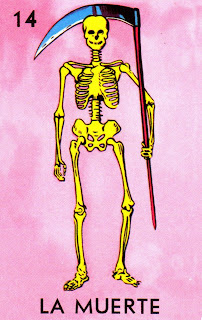

La muerte siriquiflaca, montada en su burra flaca.

"The Muerte card in Lotería represents death, a natural and inevitable part of life. Depicted with a skeletal figure, often dressed in traditional attire, La Muerte is a reminder of the cycle of life and the importance of embracing each moment. In Mexican culture, death is not feared but respected, with a deep connection to traditions like Día de los Muertos, where the departed are celebrated and remembered with joy."
Regresar